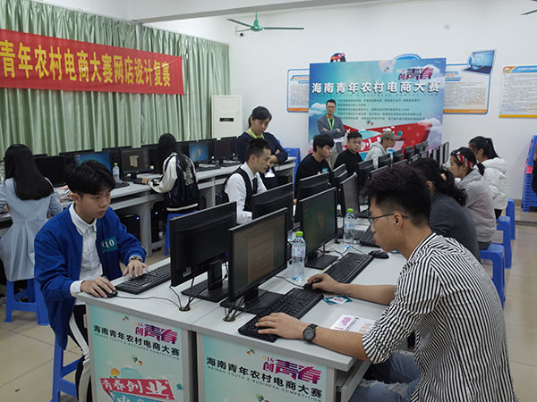
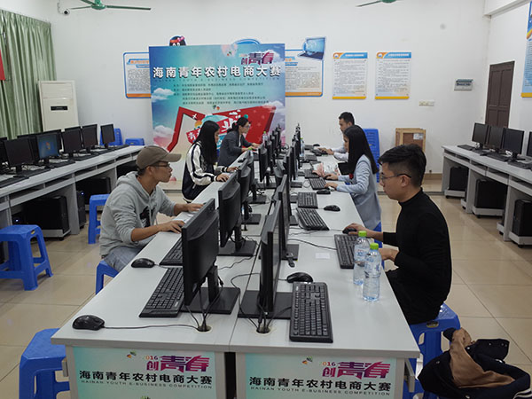
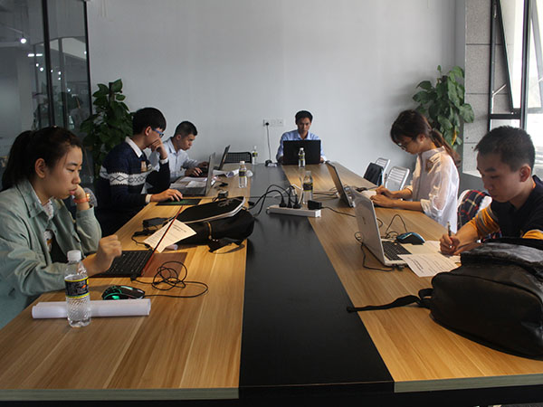
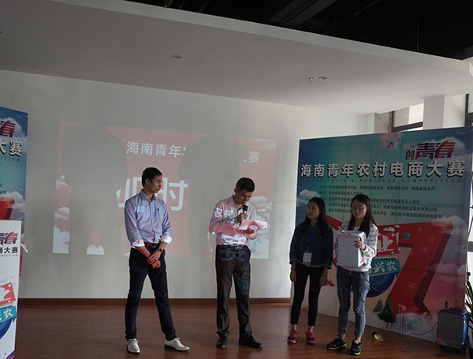
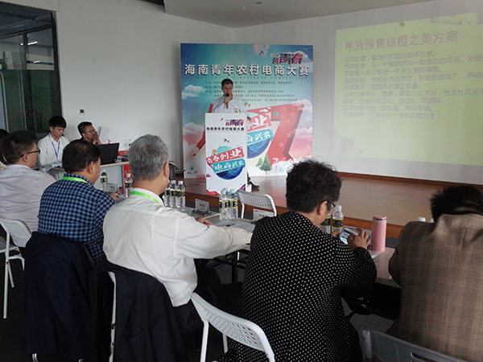
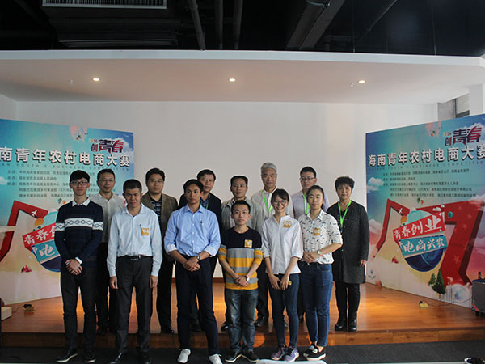

12月3日至4日，由省委组织部、团省委、省农业厅、省商务厅联合主办，陵水黎族自治县政府承办，海南青年创业就业服务中心、陵水互联网创业园等单位协办的2016海南青年农村电商大赛个人技能组复赛和决赛在海口举行，网店设计与营销策划两个类别晋级复赛的24名选手，通过复赛和决赛两轮激烈角逐，最终决出一等奖各1名；二等奖各2名；三等奖各3名。
此次大赛以“青春创业 电商兴农”为主题，旨在搭建青年农村电商人才赛事交流平台，支持和引导青年参与农村电商创业，个人技能组侧重于挖掘和培养青年农村电商人才。
1、个人技能组-网店设计类
网店设计类复赛和决赛于12月3日在海南省经济技术学校举办，复赛采取现场实操的方式，按照组委会提供的农产品相关素材与任务书，进行网店PC端首页的设计与制作。评委根据选手作品的店标设计、店招设计、宣传海报、商品详情页设计等环节进行评定；进入决赛的选手根据抽取的命题，现场制作水果菜蔬、海鲜、茶叶等农产品主题的网店模板并答辩，现场根据得分排出名次。
2、个人技能组-营销策划类
营销策划类复赛和决赛于12月4日在海口复兴城举办，比赛采取“4+4”答辩模式，即4分钟项目阐述，4分钟项目答辩。评委根据选手参赛项目的产品和市场分析、电商平台、计划与预算、促销方法、营销目标五个环节进行评分。决赛过程出现选手成绩并列的情况，在加时赛上两位选手抽取电商运营相关的问题进行答题，场面十分激烈，通过五轮答题才决出高低。
本次海南青年农村电商大赛自9月30日启动以来，各成员单位、各市县团委充分整合资源、广泛发动全省农村电商人才和企业（团队）报名参赛，企业（团队）组共有115支队伍报名参赛，个人技能组共有345名报名参赛。企业（团队）组初赛已于11月30日至12月1日在陵水互联网创业园完成初赛，评选出24支队伍晋级复赛。个人技能组决赛已于12月3日至4日在海口成功举办，共有12名选手分获一、二、三等奖。
2016海南青年农村电商大赛企业（团队）组复赛、决赛暨总结大会，拟于12月12日在海南省陵水县盛大举行。

网店复赛

网店设计决赛

营销策划决赛

营运策划加时赛

营运策划决赛

营销获奖选手合影